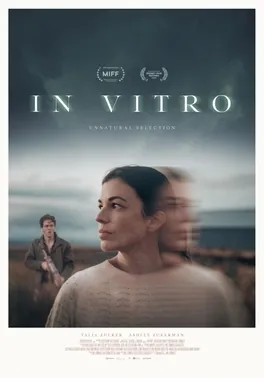

The genetics
Human cloning drives this science-fiction thriller. On a farm that clones cattle for meat, Jack secretly grows copies of his wife: he presents the latest as an illegal money-making test, but finally admits that he replaces Layla whenever she is unhappy with him. The protagonist gradually discovers that she herself is a copy and that the original has escaped Jack, divorced him and is raising their son elsewhere. The clones suffer an unexplained "clone illness" and are treated as disposable, poisoned or abandoned when inconvenient. Jack is the film's villain, using the technology to control the women in his life, but the ending is bleak rather than liberating: after killing him, Layla uses the tank to make a clone of Toby to raise alone, continuing the cycle. Instantly grown adult clones are fiction; the film uses them to explore control and identity.
How genetics is portrayed
- Overall portrayal of genetics
- negative Human cloning is a tool of domestic control and deception about identity, and the ending, with the heroine repeating it, is uneasy rather than happy.
- Outcome of the genetic intervention
- negative The cloning produces dying, disposable copies used to control a woman, leads to poisoning and murder, and ends with a new child cloned to replace a lost son.
- Jack
- villain Aim: commercial, personal, power (negative). Jack clones his wife on the family farm, claiming a revenue stream but admitting he replaces her when she is unhappy; he tricks Layla into poisoning her clone, kills Brady and is shot by Layla.
- Layla
- ambivalent Aim: personal (neutral). After killing Jack, the protagonist, herself a clone, uses the tank to clone her son and raise him alone, an ending the film presents as a continuation of the cycle.
The story
In a future of food scarcity, Jack and Layla run an isolated cattle farm that produces meat by cloning. Jack keeps putting off Layla's visits to their son Toby at boarding school. One morning she is attacked by a clone of herself. Jack claims the clone was a test of human cloning meant as a source of income, that she was not supposed to wake and is dying of clone illness, and he tricks Layla into poisoning her. Layla sees through him and flees with the clone and the cattle driver Brady; Jack kills Brady and the clone dies leading Jack away. Layla learns that Toby left the school years ago and finds him, now a teenager, living with another Layla, who has divorced Jack and holds a restraining order. Back at the farm, Jack admits he replaced her because she was unhappy. Layla kills him and uses the cloning tank to make a new Toby.